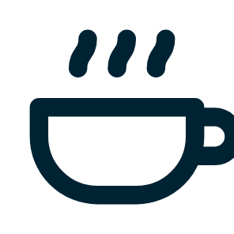
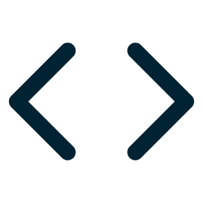
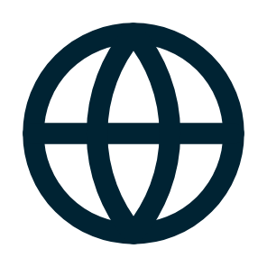
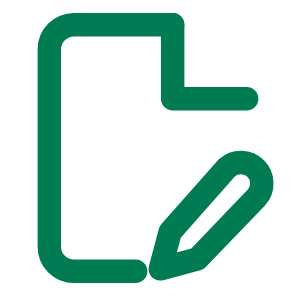

Eén taak
Algemeen model
Boodschappen

Recept
Vakantie
Mail

Code

Vertalen
en duizend andere dingen
Ons model

Feedback op schrijfopdrachten
Waar een model op getraind is, bepaalt waar het voor mag worden ingezet.
“Datasets voor training, validatie en tests zijn relevant, voldoende representatief (…) met het oog op het beoogde doel.”
EU AI Act, verordening 2024/1689, artikel 10 lid 3